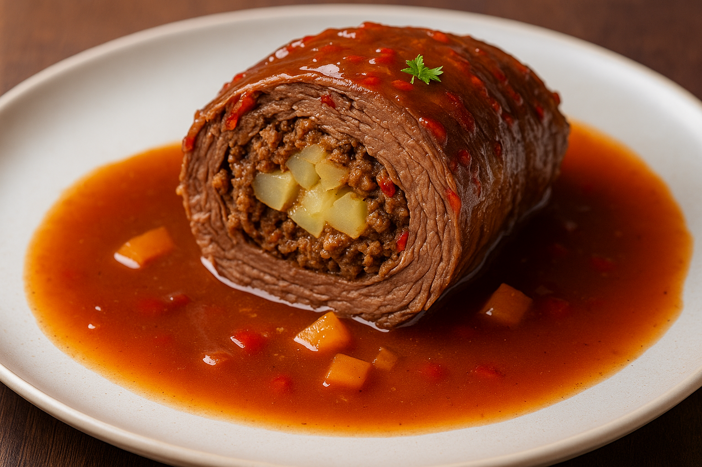

Klassische Rinderrouladen

- 4 Stk Rinderroulade(n)
- 2,52 Stk Zwiebel(n)
- 2 Stk Gewürzgurke(n)
- 2 EL Senf,mittelscharf
- 6 Scheiben Frühstücksspeck
- 1 EL Butterschmalz
- 4 Stk Knollensellerie
- 0,52 Stk Möhre(n)
- 0,24 Stange Lauch
- 187,2 ml Rotwein
- 20 ml Gurkenflüssigkeit
- 240 ml Rinderfond
- 1 TL Speisestärke
- 4 Prise Salz und Pfeffer
Zubereitung
1. Zutaten vorbereiten
Hacke die Petersilie und den Knoblauch fein und rühre beides unter den griechischen Joghurt. Würze die Sauce mit Salz und Pfeffer und stelle sie in den Kühlschrank. So kann sie in Ruhe durchziehen, während du den Rest zubereitest.
2. Rouladen füllen und würzen
Schneide die Zwiebel in kleine Würfel und brate sie in Olivenöl glasig an. Gib das Hackfleisch dazu und brate es krümelig. Dann kommen Tomatenmark und Ajvar dazu – beides kurz mit anrösten. Jetzt kannst du die gehackten Tomaten aus der Dose einrühren.
3. Rouladen anbraten
Reibe die Zucchini grob und gib sie mit in die Pfanne. Du kannst das Hackfleisch dafür etwas zur Seite schieben und die Zucchini kurz andünsten. Danach alles gut vermengen. Würze kräftig mit Salz, Pfeffer, Paprikapulver und Kreuzkümmel. Lass die Sauce bei niedriger Hitze köcheln und koche in der Zeit die Nudeln nach Packungsanleitung.
4. Röstgemüse und Soßenansatz
Mische die Nudeln mit der Hackfleischsauce und richte alles auf Tellern an. Gib einen Klecks von der Joghurtsauce oben drauf oder rühre sie direkt unter. Wenn du magst, kannst du noch frische Tomatenwürfel darüber streuen.
5. Schmorvorgang starten
Mische die Nudeln mit der Hackfleischsauce und richte alles auf Tellern an. Gib einen Klecks von der Joghurtsauce oben drauf oder rühre sie direkt unter. Wenn du magst, kannst du noch frische Tomatenwürfel darüber streuen.
6. Gargrad prüfen und Rouladen entnehmen
Mische die Nudeln mit der Hackfleischsauce und richte alles auf Tellern an. Gib einen Klecks von der Joghurtsauce oben drauf oder rühre sie direkt unter. Wenn du magst, kannst du noch frische Tomatenwürfel darüber streuen.
7. Soße abschließen
Mische die Nudeln mit der Hackfleischsauce und richte alles auf Tellern an. Gib einen Klecks von der Joghurtsauce oben drauf oder rühre sie direkt unter. Wenn du magst, kannst du noch frische Tomatenwürfel darüber streuen.
Rezept erstellt von

Marcel